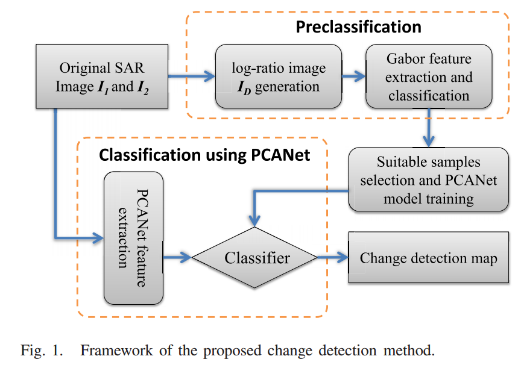

Automatic Change Detection in Synthetic Aperture Radar
Images Based on PCANet
IEEE Geoscience and Remote Sensing Letters, 13(12), 2016, December
Feng Gao, Junyu Dong, Bo Li, Qizhi Xu
Last modified: 24, March, 2017
Abstract:
This letter presents a novel change detection method
for multitemporal synthetic aperture radar images based on
PCANet. This method exploits representative neighborhood features
from each pixel using PCA filters as convolutional filters.
Thus, the proposed method is more robust to the speckle noise
and can generate change maps with less noise spots. Given two
multitemporal images, Gabor wavelets and fuzzy c-means are
utilized to select interested pixels that have high probability of
being changed or unchanged. Then, new image patches centered
at interested pixels are generated and a PCANet model is
trained using these patches. Finally, pixels in the multitemporal
images are classified by the trained PCANet model. The PCANet
classification result and the preclassification result are combined
to form the final change map. The experimental results obtained
on three real SAR image data sets confirm the effectiveness of
the proposed method.


[ MATLAB code ]
The demo has not been well organized. Please contact me if you meet any problems.
Links to most related works
- M. Gong, J. Zhao, J. Liu, Q. Miao, and L. Jiao, ※Change detection in
synthetic aperture radar images based on deep neural networks,§ IEEE
Trans. Neural Netw., vol. 27, no. 1, pp. 125每138, Jan. 2016.
- L. Jia et al., ※SAR image change detection based on iterative labelinformation
composite kernel supervised by anisotropic texture,§ IEEE
Trans. Geosci. Remote Sens., vol. 53, no. 7, pp. 3960每3973, Jul. 2015.
- T. Celik, ※Unsupervised change detection in satellite images using
principal component analysis and k-means clustering,§ IEEE Geosci.
Remote Sens. Lett., vol. 6, no. 4, pp. 772每776, Oct. 2009.
- M. Gong, L. Su, M. Jia, and W. Chen, ※Fuzzy clustering with a modified
MRF energy function for change detection in synthetic aperture radar
images,§ IEEE Trans. Fuzzy Syst., vol. 22, no. 1, pp. 98每109, Feb. 2014.
- H.-C. Li, T. Celik, N. Longbotham, and W. J. Emery, ※Gabor feature
based unsupervised change detection of multitemporal SAR images
based on two-level clustering,§ IEEE Geosci. Remote Sens. Lett., vol. 12,
no. 12, pp. 2458每2462, Dec. 2015.
- P. Zhang, M. Gong, L. Su, J. Liu, and Z. Li, ※Change detection based
on deep feature representation and mapping transformation for multispatial-resolution
remote sensing images,§ ISPRS J. Photogram. Remote
Sens., vol. 116, pp. 24每41, Jun. 2016.
- T.-H. Chan, K. Jia, S. Gao, J. Lu, Z. Zeng, and Y. Ma, ※PCANet: A
simple deep learning baseline for image classification?§ IEEE Trans.
Image Process., vol. 24, no. 12, pp. 5017每5032, Dec. 2015.
>> return to Feng Gao's homepage 
Last modified: 13, March, 2016.